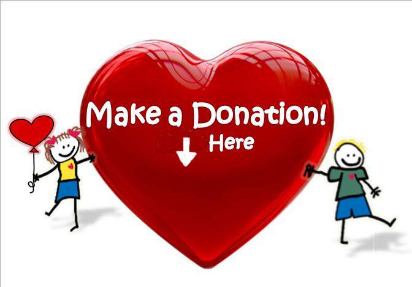

Donations

Are you interested in becoming a part of the change? Do you wish to help Advocacy Outreach educate and assist those who have less opportunity to become more self-sufficient?
Advocacy Outreach has been building successful people and families with the resources to take care of their own needs, both immediate and long-term, and the ability to advocate for themselves in the community, schools and the workplace since 1992. Our mission is to facilitate social change and justice through advocacy and a provision of services to the poor and disenfranchised in Bastrop County and surrounding rural areas.
Be a part of this action. Your generous donations help us prevent or overcome homelessness or provide assistance, continue and expand family literacy programs, support ESL education and GED education, and help people who need assistance understanding forms, regulations, and legal requirements.
Donate via PayPal
Snail Mail
Print and fill out the donation form, and mail it to us.
Phone
Call us at 512-281-4180 to donate over the phone.
Other Ways to Help
- Donate to our Free Thrift Store: gently used clothing, small housewares, and books. Come by during office hours, and call if you have large items or furniture.
- Donate to our Christmas Gift program for children.
- Donate your time: call us to see where you may volunteer in our many activities.
- Advocate for us: let your friends know we need their help and support.
We are deeply grateful for your support. Your generous donations help people with limited resources become self-sustaining and vital members of our community.